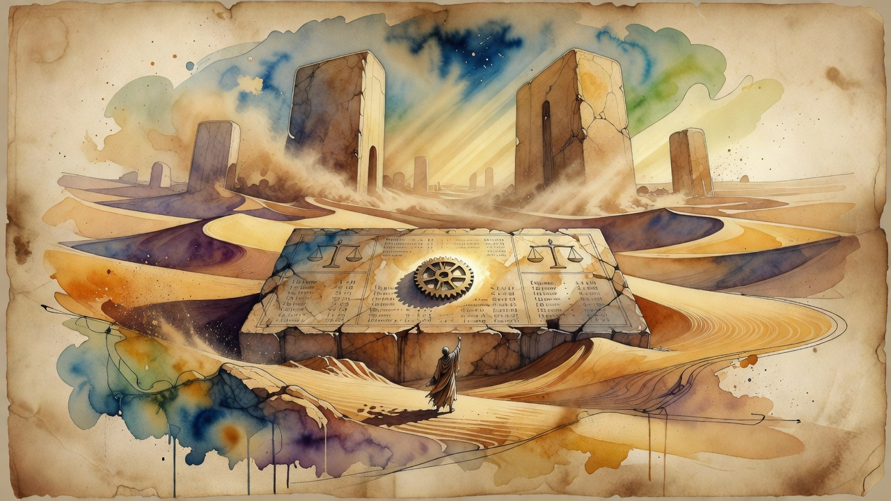

Jev maker banks $870M
TypeSafe AI raises $870M at $7.5B valuation weeks after Jev launch
The startup behind Jev — the non-transformer 'task model' reportedly used by roughly a third of the Fortune 500 — closed an $870M round at a $7.5B valuation just weeks after the model's launch. Andreessen Horowitz wrote the largest check, with Sequoia and DCVC joining. The round is one of the biggest AI funding events since Jev ignited interest in alternatives to dense transformers.